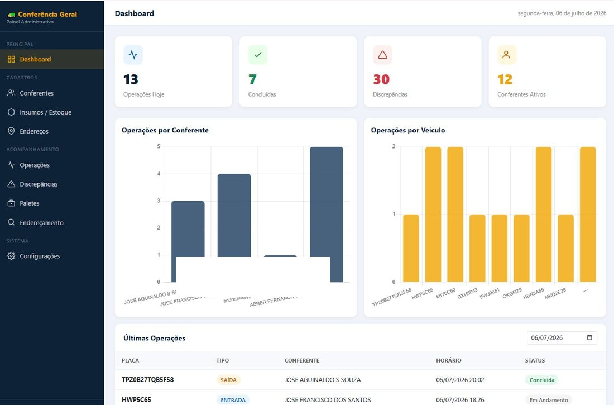
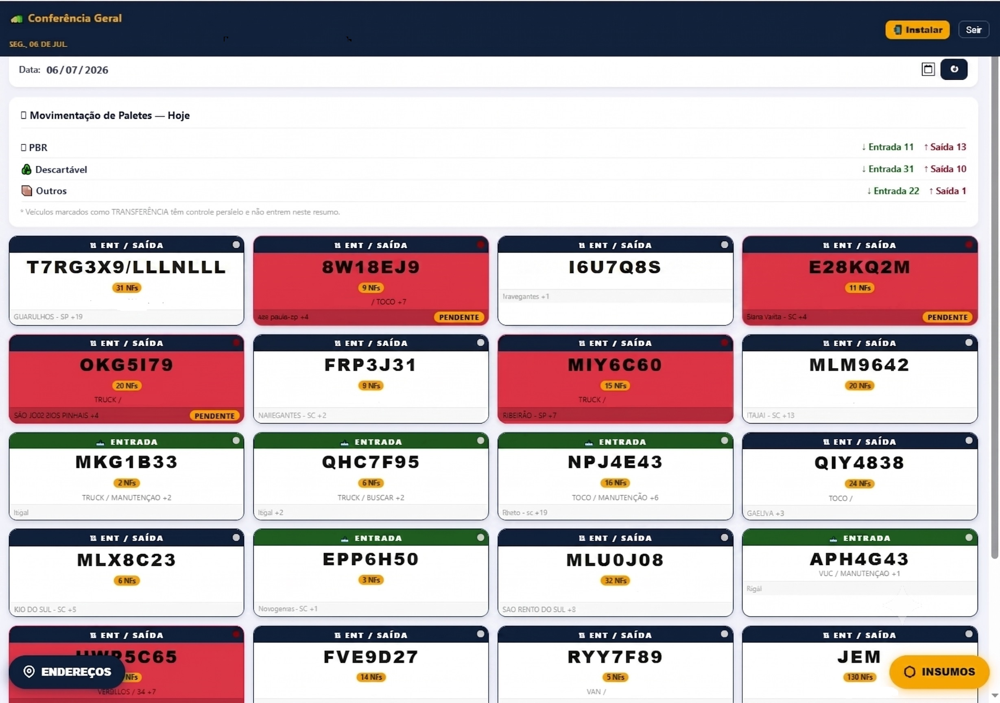
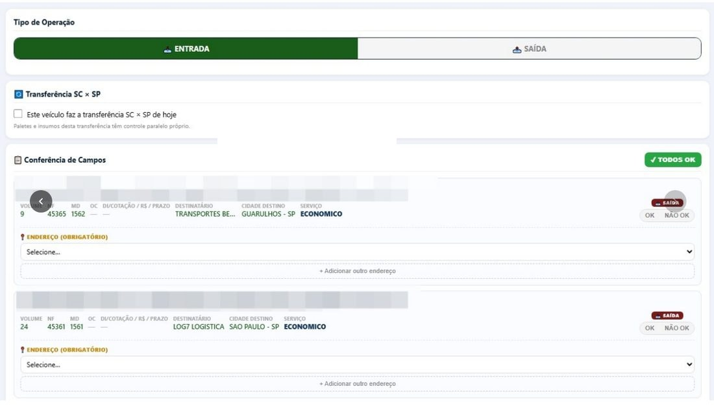
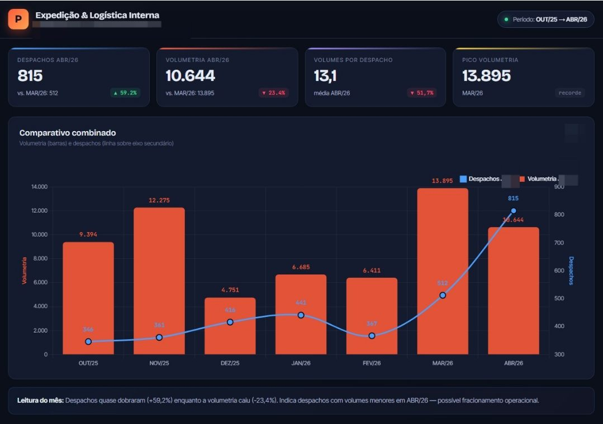
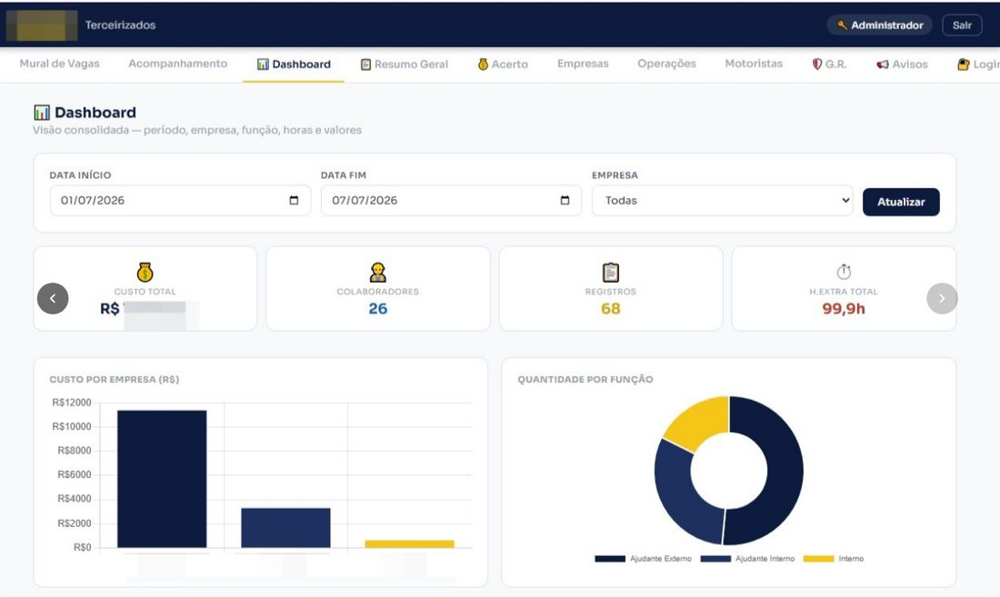
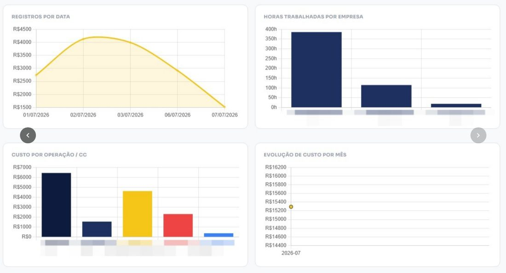

Sistemas que construí para resolver problemas reais de operação.
Além de coordenar equipes, desenvolvo as próprias ferramentas que a operação usa no dia a dia — dashboards, apps de conferência e painéis de gestão, todos em produção em operações reais de logística.
Conferência Geral
Em produçãoSistema de conferência de carga que substitui o controle manual em papel: cada veículo de entrada ou saída vira um card com contagem de notas fiscais, status de discrepância e conferência campo a campo, com endereçamento obrigatório e movimentação de paletes (PBR, descartável e outros) resumida por dia.



- Painel com operações do dia, discrepâncias e conferentes ativos
- Cards de entrada/saída por placa, com contagem de NFs
- Conferência campo a campo com endereçamento obrigatório
- Resumo diário de movimentação de paletes por tipo
Dashboard Expedição & Logística Interna
Em produçãoPainel mensal usado nas apresentações para a liderança do departamento, cobrindo 9 quadrantes e 21 indicadores. Compara despachos e volumetria mês a mês em um único gráfico combinado, com leitura automática do que os números indicam.

- KPIs comparando o mês atual com o anterior (despachos, volumetria)
- Gráfico combinado de barras e linha em eixos duplos
- Leitura automática do mês, apontando padrões como fracionamento operacional
- Grade de dados editável, com importação direta do Excel
Gestão de Terceirizados
Em produçãoSistema completo de gestão de mão de obra terceirizada: mural de vagas, acompanhamento de ponto, acerto financeiro, cadastro de empresas, motoristas e um dashboard consolidado por período, empresa e função.


- Mural de vagas e acompanhamento de ponto com apontamento de horas extras
- Filtro por período e empresa, com atualização em tempo real
- Custo por empresa, por operação/centro de custo e evolução mensal
- Módulos de empresas, motoristas, G.R. e avisos, com login por perfil